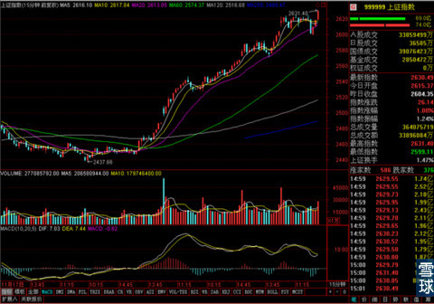
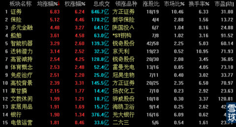

同时我们可以观察到的是，在深证100指数上涨1.05%的情况下，银华锐进的涨幅不仅没有及时体现出应有的杠杆性，反而比较低迷。而追踪上证指数的申万进取却逼近涨停，
这种情况很难用常理来进行解释，有可能说明市场主力在2600整数关口这个位置出现了明显的分歧。
更重要的证据是股指期货在上证指数收盘后的走势，尾盘那个快速下跌也有问题。

由于上证指数15分钟线和30分钟线都出现了比较明显的顶背离形态，虽然没有直接的证据可以表明明天会有大幅度回调的情况出现，但是盘面上这些异常信号已经值得引起短线投资者的警惕了。
金融类股票连续大涨之后，依然没有其它权重股进入板块涨幅榜前列。

总之明天的走势是近期的一个关键点，首先是否在2600整数关口就地整理要看明天的走势，同时11月的最后一个周末有什么重要消息与否也会在明天的盘面运行中看出端倪，就像上周末降息的时候，周五大盘已经在消息公布之前提前上涨了。
所以短线投资者明天应该谨慎操作，中长线的可以暂时不动，但是也应该留心观察盘面信号。暂时判断明天横盘甚至有所下跌的可能性稍大一些。